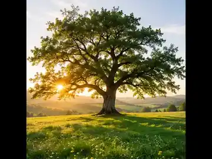
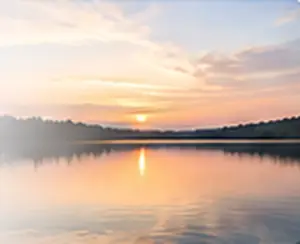

The Creator and Creation
Creation points to a Creator, and creation finds its fulfillment in Him.
Creation points to a Creator, and creation finds its fulfillment in Him.
At the deepest level, we long for connection—with the Creator, with others, and with the whole of creation.

Humanity is uniquely created in the image of the Creator, with dignity, value, and a special calling.
Free will and intelligence are precious gifts, calling us to choose, create, and take responsibility.
Hardship and suffering are not senseless; they can refine character, deepen understanding, and reveal greater purpose.
We are invited to live with purpose—for our own growth, for our families and communities, and for a better world.
